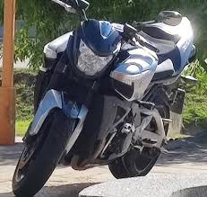
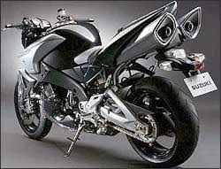

B-king 1340
| Marca |
Modelo |
Ano |
Preço |
Oleo |
| Suzuki |
B-king 1340 |
2008-2012 |
R$50.187,00 |
SAE 10W-40 |
- Curiosidade 1: O conceito original tinha um motor Hayabusa supercharged, algo ainda mais insano que a versão final de produção.
- Curiosidade 2: Quando virou moto de rua, a Suzuki destacou que o visual da produção ficou muito fiel ao conceito, o que ajudou a B-King a virar uma das nakeds mais “exageradas” da época.
- Curiosidade 3: Ela usa o 1340 cc derivado da Hayabusa, mas com acerto próprio de admissão e escape, além do S-DMS, que permite selecionar mapas de entrega de potência.
- Curiosidade 4: Torque: 14,8 kgf.m a 7200 rpm

